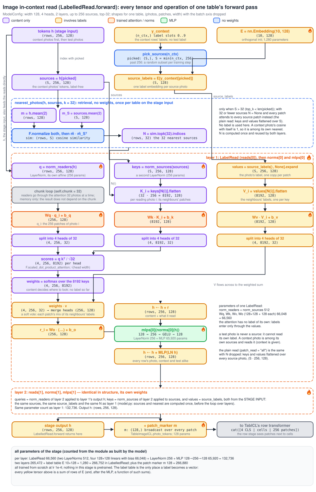
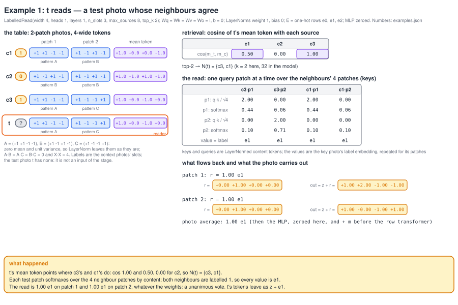
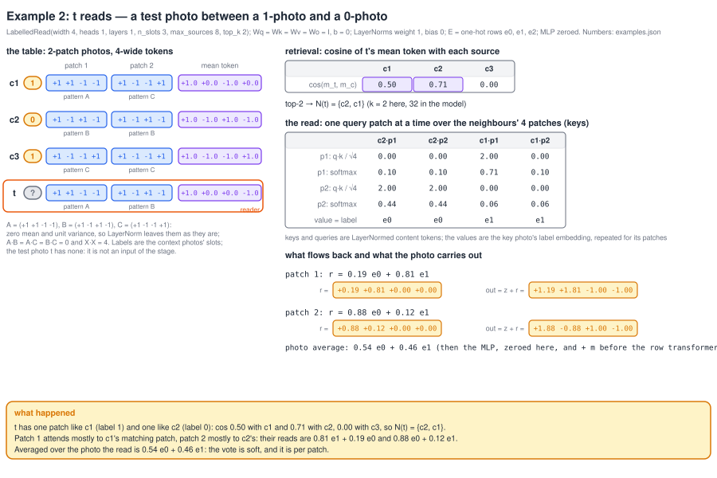
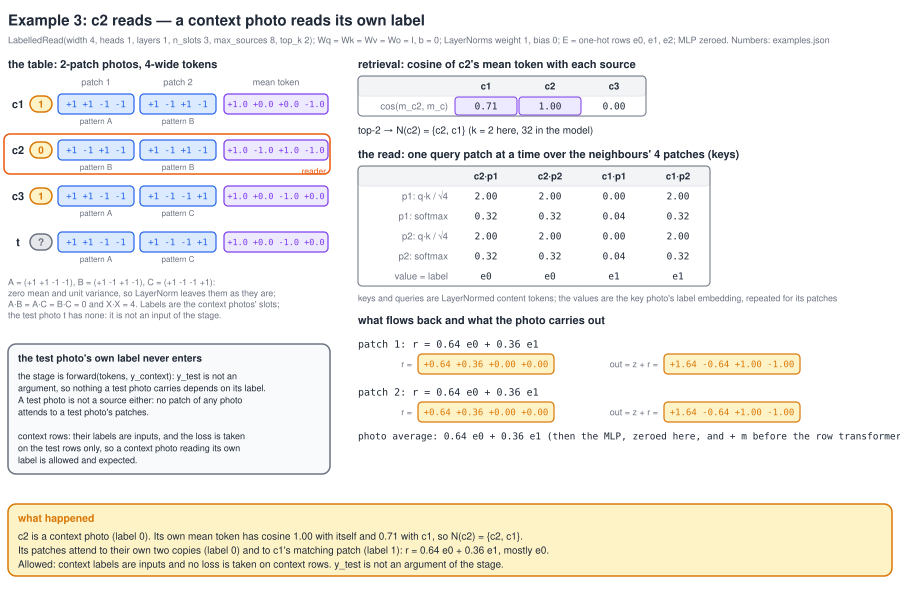

4 SVG files in docs/figures/image-icl/: the full data flow of LabelledRead.forward and three worked examples whose numbers come from running the module (see examples.json).

full-dataflow.svgImage in-context read: the full data flow of LabelledRead.forward for one table, every tensor with its shape, every operation, with the tensors that involve labels in yellow and the content-only ones in purple
example-1.svgExample 1 from the real code: a test photo whose two nearest context photos both carry label 1 reads back exactly e1 on every patch
example-2.svgExample 2 from the real code: a test photo between a label-1 and a label-0 photo reads back a mixed vector, about half e0 and half e1 over the photo
example-3.svgExample 3 from the real code: a context photo with label 0 retrieves itself and reads back mostly e0; the test photo's label is never an input